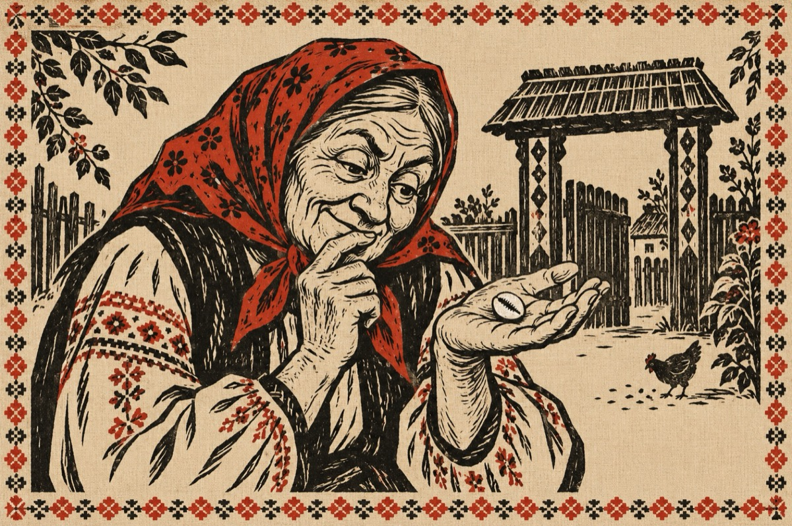

Fata lui Gane
Te plimbă Marghioalo pe unde ți-i locul,
Nu mai umbla prin sat cu ghiocul.
Mă rog, ce te doare că fata lui GANE
De la o vreme-ncoace, s-a cam umflat în fasole
A ajuns să i se vadă sub poale.
Lui GHIȚĂ i-a dat în ghioc
Că dacă o ia pe a lui Gane, o să aibă noroc!
Și Ghiță te-a ascultat!
Și-acum are doi gemeni, o fată și un băiat.
Necazul acum e altul
Pe Ghiță îl râde tot satul
Cum că el este încă virgin săracul
Și fata lui Gane spune că el e vinovatul!
El de rușine și milă a acceptat
Și acum fata lui Gane îl are de bărbat!
Vezi ce-ncurcătură ai făcut Marghioalo,
Fata lui Gane, ca de necaz să-i treacă
La pus pe Ghiță, să-i facă „acea” treabă.
Iar el de frică și de rușine,
A lăsat și „copii și nevastă” și a plecat în lume
Ghiță,
Dacă ai fost prost guiță!...
Vasile Groza